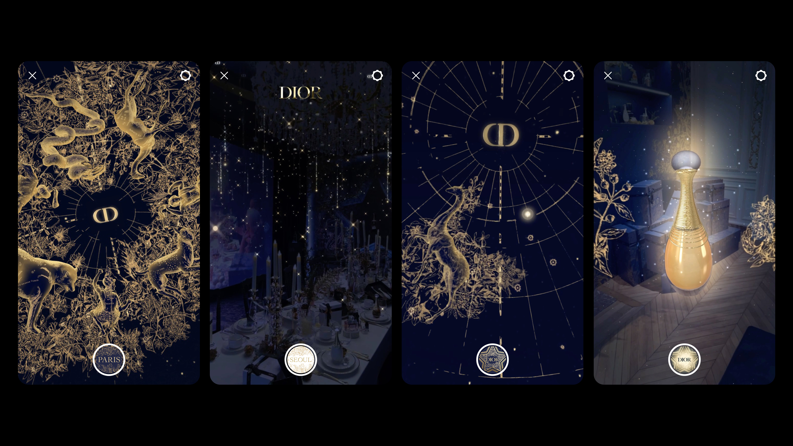

META X DIOR / THE ATELIER OF DREAMS
AR. Beauty. Fashion (2022)
Through the collaborative efforts of Dior, Meta, and BUCK, The Atelier of Dreams was created as a global AR campaign for the 2022 holiday season. I had the pleasure of working on this project as art director and creative technologist at BUCK.
BUCK took the celestial motifs illustrated for the campaign by Italian artist Pietro Ruffo and transformed them into a collection of AR activations. Each activation was crafted to evoke a sense of otherworldliness and spatial presence, culminating in an interplay between the physical and the ethereal.
We brought this vision to life through the implementation of various AR tracking capabilities:
We created four site-specific installations in Paris and Seoul that made use of advanced image-tracking and multiplane-tracking to awaken dormant spaces.
Additionally, we designed a product-driven at-home experience triggered by hand-tracking; and a point-of-sale encounter that used image-tracking to reveal a vast cosmic dome, reaching Dior’s retail locations worldwide.
☺ Full case study and credits → buck.co
☆ Behind the scenes → Video series by Meta Spark
AR. Beauty. Fashion (2022)
Through the collaborative efforts of Dior, Meta, and BUCK, The Atelier of Dreams was created as a global AR campaign for the 2022 holiday season. I had the pleasure of working on this project as art director and creative technologist at BUCK.
BUCK took the celestial motifs illustrated for the campaign by Italian artist Pietro Ruffo and transformed them into a collection of AR activations. Each activation was crafted to evoke a sense of otherworldliness and spatial presence, culminating in an interplay between the physical and the ethereal.
We brought this vision to life through the implementation of various AR tracking capabilities:
We created four site-specific installations in Paris and Seoul that made use of advanced image-tracking and multiplane-tracking to awaken dormant spaces.
Additionally, we designed a product-driven at-home experience triggered by hand-tracking; and a point-of-sale encounter that used image-tracking to reveal a vast cosmic dome, reaching Dior’s retail locations worldwide.
☺ Full case study and credits → buck.co
☆ Behind the scenes → Video series by Meta Spark

As art director and creative technologist, I assumed dual responsibilities over 5 months of production. I was deeply involved in key aspects of the project, including concept development, art direction, interaction design, prototyping, look development, and programming. Ultimately guiding the artistic vision and ensuring technical feasibility across all 6 experiences.

READ ON
Harper's Bazaar → Heart Evangelista, Chau Bui Celebrate The Launch of Dior Beauty's Atelier of Dreams
L'officiel → The Stars Align for The Atelier of Dreams by Dior Beauty
Lenslist → Magical Collaboration Between BUCK x DIOR
Harper's Bazaar → Heart Evangelista, Chau Bui Celebrate The Launch of Dior Beauty's Atelier of Dreams
L'officiel → The Stars Align for The Atelier of Dreams by Dior Beauty
Lenslist → Magical Collaboration Between BUCK x DIOR

Thumbnail / Dior campaign ft. Anya Taylor-Joy
Demos & Documentation / Courtesy of Dior, Meta, and BUCK
Demos & Documentation / Courtesy of Dior, Meta, and BUCK